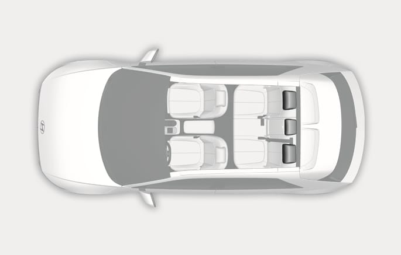
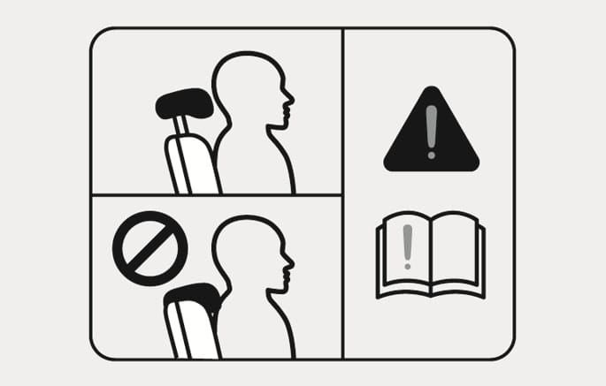
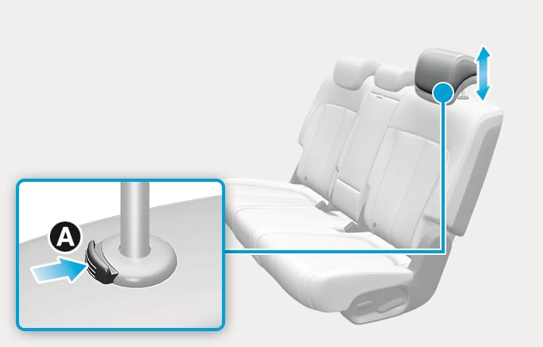
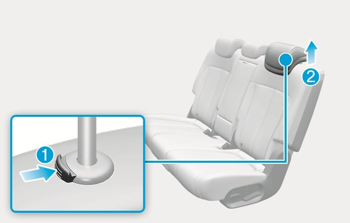
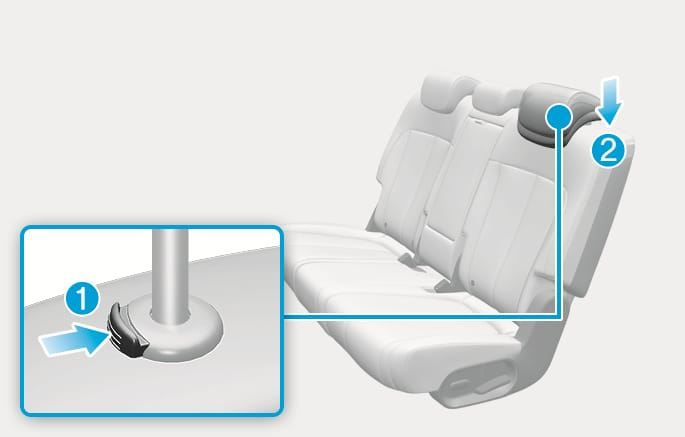

헤드레스트 높이 조절하기

2C_RearHeadrestPosition
-
주행 중에는 헤드레스트를 조절하지 마십시오.
-
헤드레스트를 가장 낮은 위치에 고정하거나 제거한 상태로 뒷좌석에 탑승하지 마십시오.

2C_RearHeadrestCaution
헤드레스트를 조절할 때, 헤드레스트와 등받이 사이에 손가락이 끼지 않도록 주의하십시오.
높낮이 조절하기

2C_AdjustRearHeadrestUpDown
헤드레스트와 시트 사이의 잠금 해제 버튼(A)을 누른 상태로 헤드레스트를 위아래로 움직여 높이를 조절하십시오.
-
헤드레스트 중심부가 탑승자의 귀 뒷부분에 오도록 조절하십시오.
헤드레스트 분리하기

2C_AdjustRearHeadrestUpDown_3
-
등받이 각도 조절 레버로 좌석 등받이를 앞으로 젖히십시오.
-
잠금 해제 버튼(1)을 누른 상태에서 헤드레스트를 위로 올려 분리하십시오(2).
헤드레스트 장착하기

2C_AdjustRearHeadrestUpDown_2
-
등받이 각도 조절 레버로 좌석 등받이를 앞으로 젖히십시오.
-
헤드레스트 폴을 등받이 홈에 장착하십시오.
-
잠금 해제 버튼(1)을 누른 상태에서 헤드레스트를 내려 위치를 조절하십시오(2).